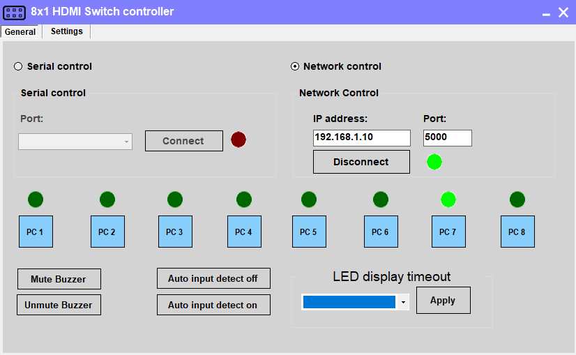
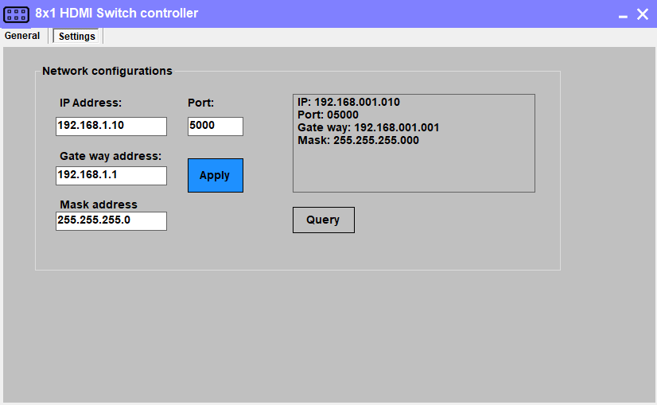

TESMART managed multiport KVM switch¶
The TESMART managed switch can be controlled by PiKVM to allow it to connect to multiple hosts. A typical scenario is a single PiKVM device which can control and switch between multiple hosts or servers using the TESMART switch. UI elements can be added to the GPIO dropdown to allow switching between hosts from the PiKVM webpage. The instructions here were tested with the TESMART HKS1601A10 HDMI 16x1 switch. This should work with any of the other TESMART variants which have a LAN port - there is both a 8x1 and 4x1 variant. This was tested with an RPI4, but as this is executed over a network protocol, this should with almost anything.
Connections¶
From a high level, the TESMART switch uses standard connections to the host machines (USB-A to USB-B and HDMI). The Raspberry Pi OTG connector (the one coming from the USB-C port on a Pi 4 via the custom splitter cable or device) should be connected to one of the USB 2 output ports on the TESMART switch (not the keyboard/mouse port). Based on your specific devices, and to get boot images to mount, you may need to connect this through a USB 2 hub.
-
Connect the USB-A cable from the Raspberry Pi OTG port to one of the TESMART switch USB 2 output ports on the back of the switch (not the keyboard/mouse ports).
-
Connect the HDMI out from the TESMART switch to the Raspberry Pi CSI-2 to HMDI input.
-
Connect the LAN port on the front of the switch using standard ethernet cable into one of your network switches.
-
Connect host USB and HDMI cables from the TESMART switch to the machines to be managed per the switch instructions.
Warning
There is a limitation in the underlying PiKVM software related to plugging video cables from a host which is already powered and connected to a monitor to a Raspberry Pi CSI2-HDMI encoder. These limitations apply equally when using the TESMART KVM switch. If video is not present in PiKVM, try keeping all host machines off and connecting them directly to the TESMART switch before powering the hosts on.
Setting the IP Address of the TESMART switch¶
In some ways, this is the most complex part of this. The default IP address of the TESMART switch is 192.168.1.10. If that happens to work with your IP addressing scheme and current set of addresses, then you may be all set. This IP address is not configurable via DHCP or other standard mechanisms. The only way to change it is with a Windows utility available on the TESMART Downloads Page.
If you need to change it, you will first need to connect to the switch with a Windows machine, most easily directly through an ethernet cord, with your Windows laptop (or VM) up and assigned to a fixed IP address, such as 192.168.1.5. Once you've launched the utility you will see this screen:

On this screen, ensure you are on the "General" tab. Click the radio button for "Network control". Change the IP address to the default for the switch (may already be this -- 192.168.1.10). Press the "Connect" button. Should make the status light go green, as well as the selected port. If you do not get a connection here, you cannot proceed to change the IP address. To change the IP address, change to the "Settings" tab at the top. You will then see this screen:

On this screen, change to your desired IP address, gateway, mask, and port. Then press apply. Watch the box on the right to see if it applied OK. Press Query again to double-check. The actual IP address will not be changed until you power off/power on the switch. Make sure you have these settings correct, because if you get them wrong you would have to connect over RS232/serial and not the network.
There may be alternatives other than changing the IP address in this manner if you don't have access to a Windows machine or if this address doesn't work for you. See this README for other options (Images and concepts from the bash file were borrowed for creation of this plugin). This also contains a summary of the protocol, which is also available on the TESMART downloads page.
Adding UI elements to control the KVM switch¶
The UI can be updated to add buttons to switch between KVM inputs and indicators for which input is currently selected. The instructions below will make these available in the PiKVM UI after clicking the "Switches" menu button in the KVM view.
-
Enable read-write mode on the SD card via
rw -
Edit the
/etc/kvmd/override.yamlfile and include the following:kvmd: gpio: drivers: tes: type: tesmart host: 10.10.1.10 port: 5000 scheme: server0_led: driver: tes pin: 0 mode: input server0_switch: driver: tes pin: 0 mode: output switch: false server1_led: driver: tes pin: 1 mode: input server1_switch: driver: tes pin: 1 mode: output switch: false server2_led: driver: tes pin: 2 mode: input server2_switch: driver: tes pin: 2 mode: output switch: false server3_led: driver: tes pin: 3 mode: input server3_switch: driver: tes pin: 3 mode: output switch: false view: table: - ["TESMART Switch"] - [] - ["#Server 1", server0_led, server0_switch|Switch] - ["#Server 2", server1_led, server1_switch|Switch] - ["#Server 3", server2_led, server2_switch|Switch] - ["#Server 4", server3_led, server3_switch|Switch] -
Return to read-only mode for the sd card via
ro -
Restart the
kvmdservice:systemctl restart kvmd
Switching between hosts in the UI¶
To switch between hosts, enter the KVM UI and click the "Switches" menu. You should see your inputs, one of which will have a green circle indicating it is currently selected. Click the other inputs to change the selected host.